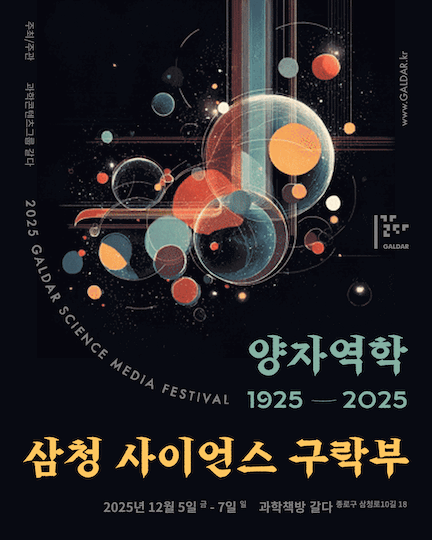
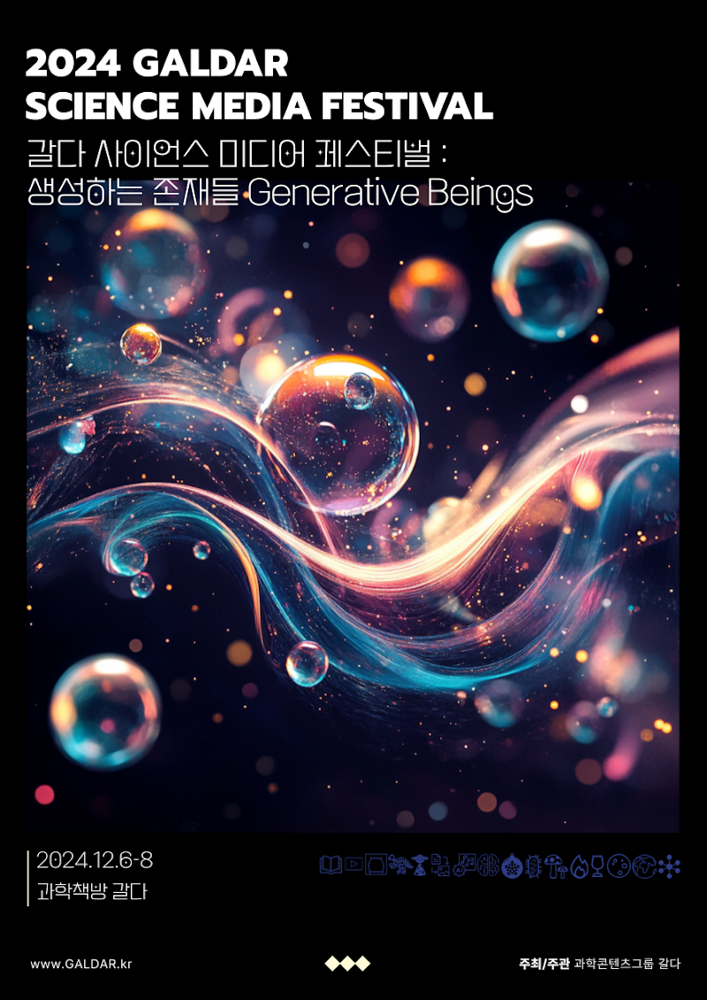
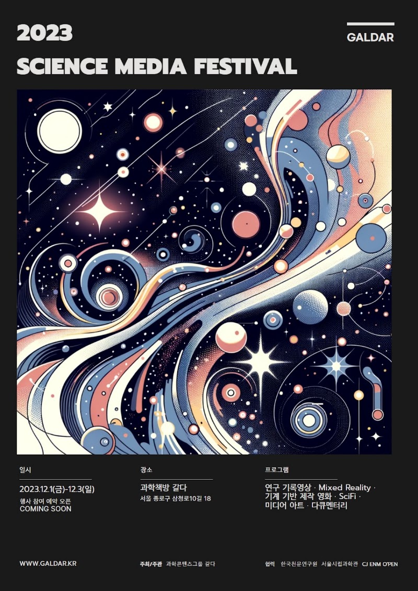

2025 GALDAR SCIENCE MEDIA FESTIVAL
삼청 사이언스 구락부
양자역학 1925–2025
2025.12.05–12.07 · 과학책방 갈다

양자역학 100주년을 맞아 1925년 경성과 유럽, 2025년 양자컴퓨팅을 잇는 체험형 전시입니다. 김용관과 발명학회, 과학조선의 이야기를 따라 과학 대중화의 아이디어를 모읍니다.
프로그램
- 1925년 식민지 조선 지식인들의 과학에 대한 열정
- 1900–1925년 양자역학을 만든 과학자들
- 2025년 양자컴퓨터의 현재와 미래
- 두 개의 시간, 하나의 시대: 양자혁명과 조선의 지성
- 한 해의 유튜브·도서·공연·전시·영화를 살펴보는 과학문화콘텐츠 연말결산
전시와 관람 안내
전 층에서 100분간 진행. 금요일 11–20시(18시 입장 마감), 토·일요일 10–19시(17시 입장 마감). 14세 이상 추천, 어린이는 보호자 동반. 당시 정가 30,000원, 할인 유형에 따라 21,000원부터 운영되었습니다. 1920년대 모던걸·모던보이 소품이나 의상을 권장했습니다.
2025년 전체 원문 보기2024 GALDAR SCIENCE MEDIA FESTIVAL
생성하는 존재들
Generative Beings
2024.12.06–12.08 · 과학책방 갈다

인공지능과 함께 읽고 쓰고 만드는 시대, 서로를 돌보는 방법을 과학문화콘텐츠에서 찾아봅니다.
프로그램
- 12.06 13:00 · 과학적 문해력을 위한 인공지능 기반 온라인 지식 플랫폼 SOAK
- 12.06 15:00 · 사이언스 심포니: 과학 한 문장에서 음악으로
- 12.06 17:00 · 인공지능과 협업하여 문장을 채굴하는 방법
- 12.06 19:30 · 북토크: 인공지능은 나의 읽기·쓰기를 어떻게 바꿀까
- 12.07–08 10:30 · 과학 테마 크리스마스 트리 오너먼트 만들기
- 12.07 11:00 · 2024 과학문화콘텐츠 연말결산 후기, 과학방탈출 비하인드 공유
- 12.07 13:30 · 코스모스웩 제작 비하인드 토크
- 12.07 16:00 · 이그나잇 갈다: 갈다와 함께한 2024년
- 12.07–08 17:00 · SF 영화 상영
- 12.08 14:00 · 갈다 살롱: 과학으로 연결된 예술가와 기획자들
전시와 관람 안내
전시는 2024년 12월 6일부터 2025년 1월 31일까지 금·토·일 무료 관람으로 운영되었습니다.
2024년 전체 원문 보기2023 GALDAR SCIENCE MEDIA FESTIVAL
사이언스 미디어 페스티벌
과학 미디어의 경계를 묻다
2023.12.01–12.03 · 과학책방 갈다

연구 기록과 AI 영상, 혼합현실과 영화가 만난 첫 페스티벌. 과학을 담는 매체의 범위를 함께 탐색했습니다.
프로그램
- 12.01 15:00 · 1 HUMAN MESSAGE / 언해피서킷
- 12.01 16:00 · 연구기록영상: 별, 눈 그리고 사람 / 한국천문연구원 정해임
- 12.01 17:00 · AI Generated Movie: Expanded Childhood / Sam Lawton
- 12.01 18:00 · 사이언스 콘텐츠, 사이언스 미디어 / 이명현·이미영
- 12.02 13:00 · Beyond Reality: MR 체험 / 기어이 이혜원
- 12.02 15:00 · Spores; 퍼뜨리고, 연결하라! / 미역 그래피티, Close to the Weaving Web Om
- 12.02 16:00 · 기계기반 가내수공업 영화들: 에란겔 다크투어 / 오영진
- 12.03 13:00 · 몸: 첫번째 환경 / 움직여!, 원형하는 몸 / 임소연·도유진·차진엽
- 12.03 15:00 · 미래사고실험과 SF: 기형아 / 김현탁
- 12.03 16:00 · 신고전 SciFi 영화의 재발견 / 박상준
- 12.03 17:00 · 전문가와 관객 총평 / 오영진·박상준·현어진
전시와 관람 안내
연계 전시: 언해피서킷 〈1 HUMAN MESSAGE〉, 갈다 2층, 12월 1–17일 금·토·일. 연계 상영: 〈우유니 소금사막의 별이 내리는 밤〉, 서울시립과학관, 10월 28일–12월 31일 주말·공휴일.
2023년 전체 원문 보기